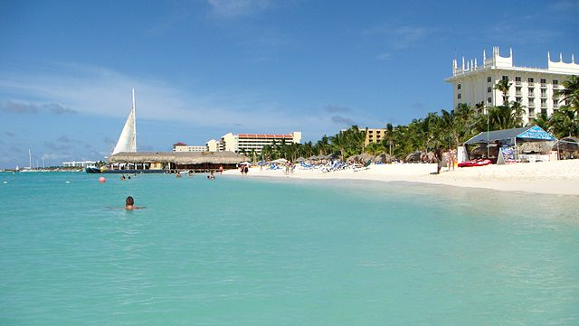
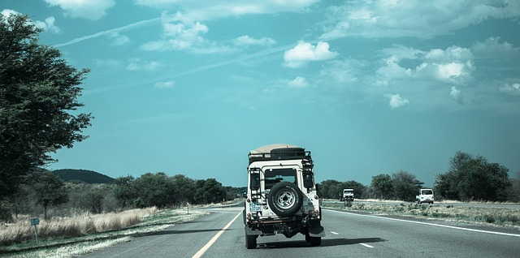
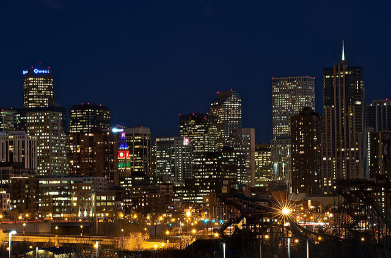

This assignment is based around a trip my older brother, Juan, took me on over the summer. Orignially he wanted to go away somewhere but wasn't sure on the location. I'd always ask jokingly if I can tag along with him, however I wasn't prepared for his response. "You pick the spot and we go." is what he said. I had thought he was kidding at first but he was serious. I was in shock when he told me that and I had no clue on where to choose. I wasn't sure if I wanted to go to far away maybe a road trip, then part of me wanted wanted to go somewhere midwest, and another part of me was like "hey screw it, let's leave the country." I took about a week and gave it some serious thought. Narrowed it down to four locations:
A place I've been to before and knew I would've loved to visit again.
A place I went with my parents and brother back in 2013 and had an amazing trip.

Starting in The Bronx, driving all the way up to Portland, Maine. Slowly making our way back stopping at differenct locations on the way such as; White Mountain National Forest to Portsmouth, New Hampshire. Down to Boston, Massachusetts and Providence, Rhode Island slowly making our way back home.

Somewhere I've never been before and always wanted to go, visit some of the mountains and check out colorados draft beer. We gave it some serious thought and this was the location we decided on. We packed our bags and went away for a week!!
